根據衛福部食藥署統計，國人每年平均食用59.92公斤的海鮮，包含28.35公斤的魚、12.2公斤的貝類、19.37公斤的頭足類。
(資料來源：衛福部食藥署，2019 年食物細項攝食量計算結果)


根據衛福部食藥署統計，國人每年平均食用59.92公斤的海鮮，包含28.35公斤的魚、12.2公斤的貝類、19.37公斤的頭足類。
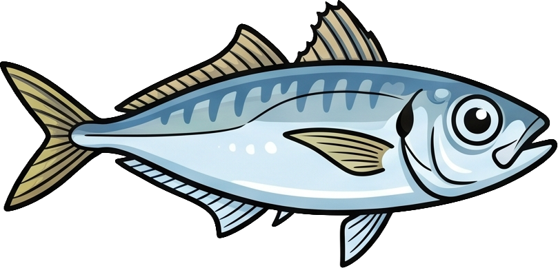
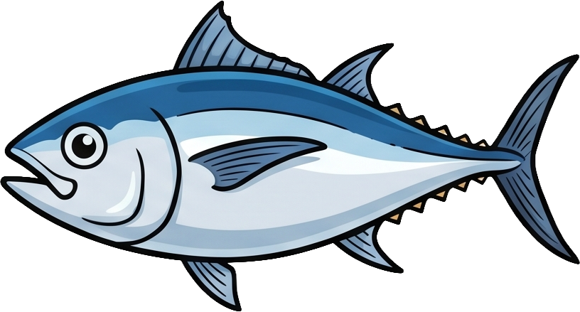
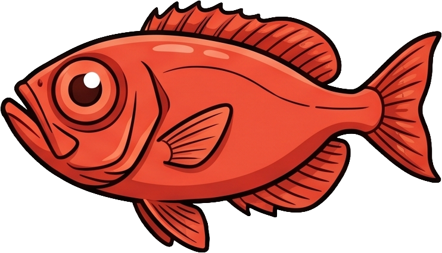

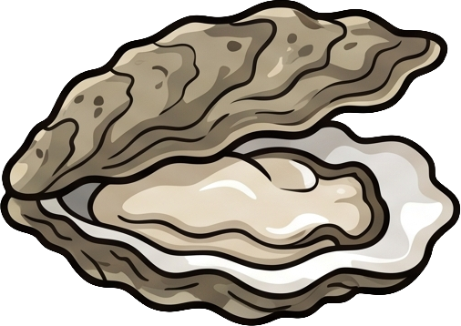


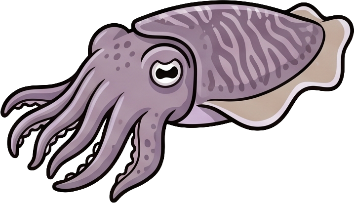
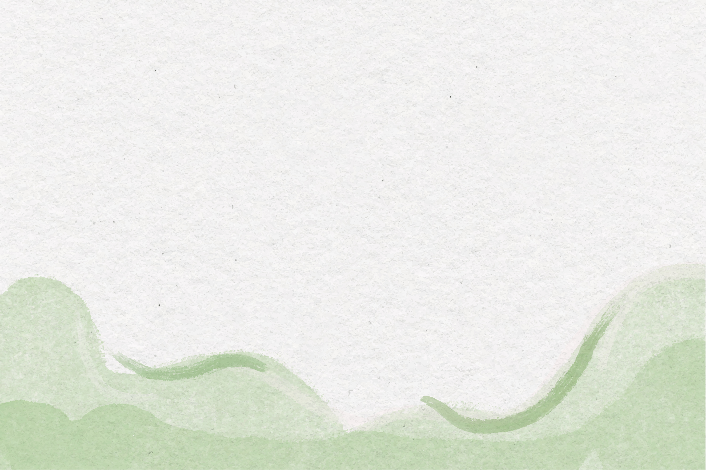


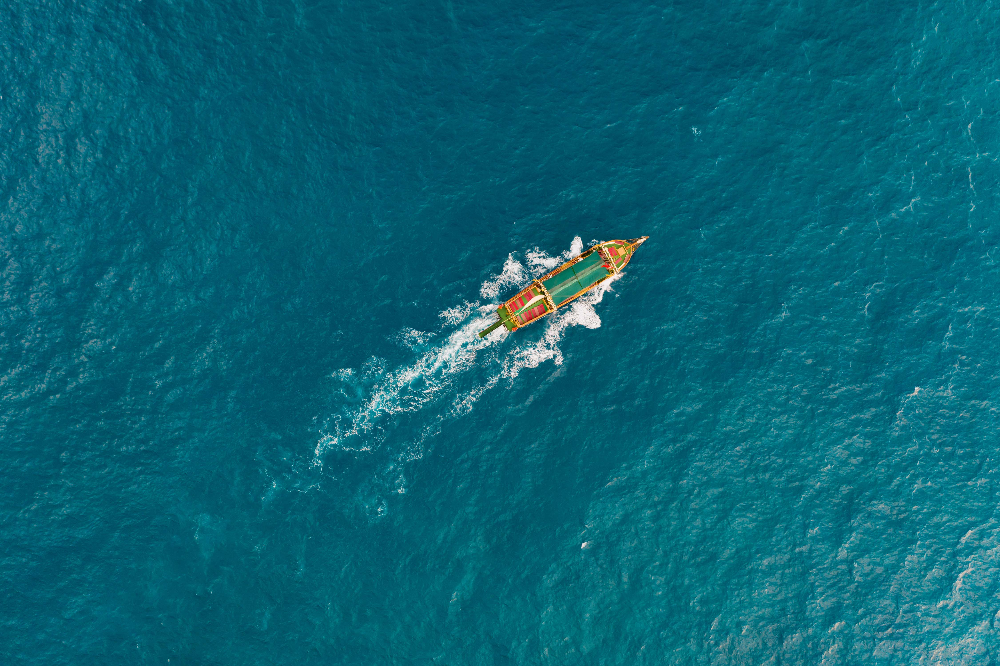
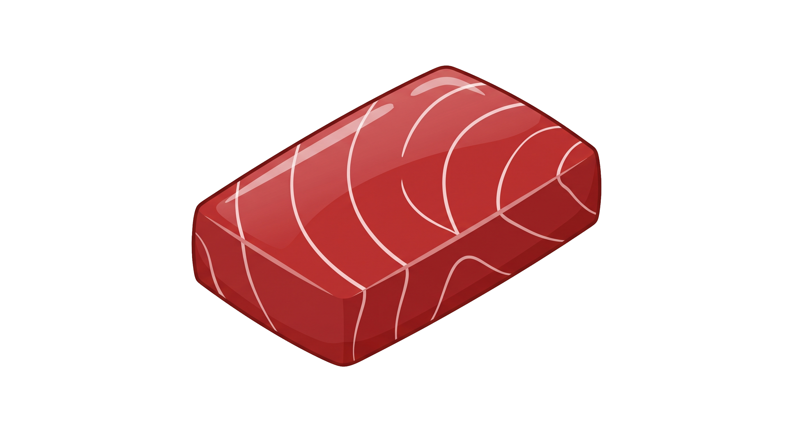

那是一個用人命與污染換取經濟奇蹟的年代
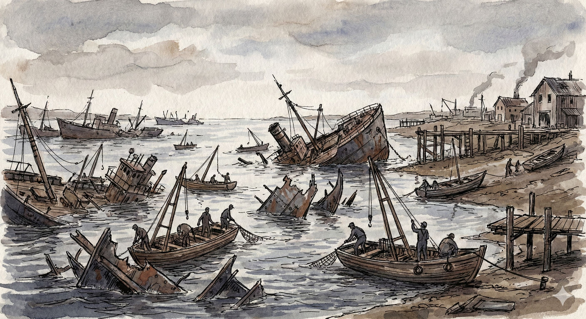

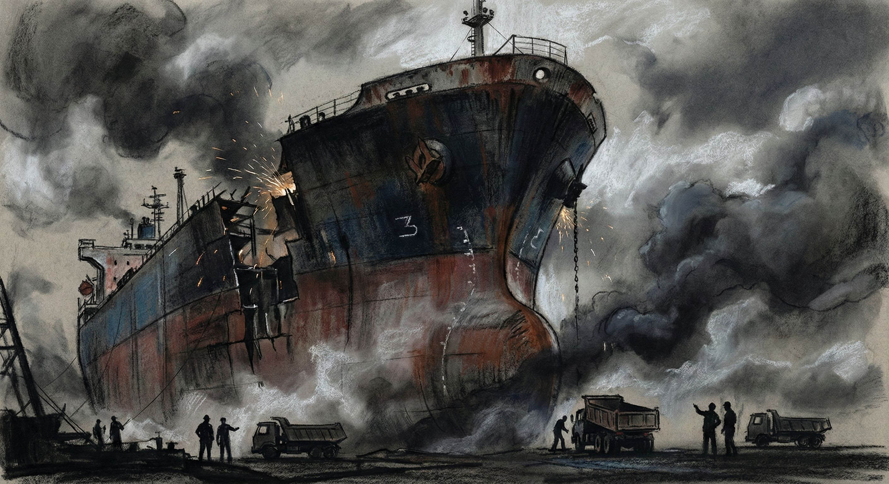

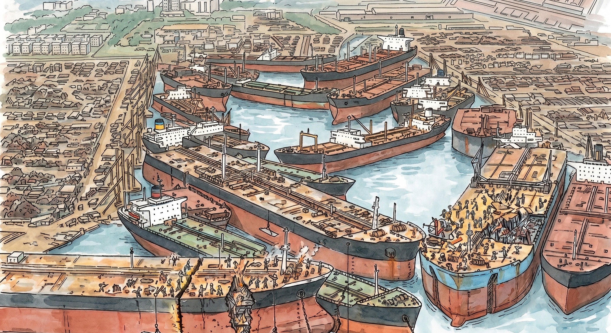
上午 11 時 40 分，加那利號油輪在拆解時發生連環大爆炸
轟天巨響震碎了小港區，造成 16 人死亡、百餘人重傷
這場爆炸，炸出了拆船業「肉身搏命、毫無防護」的殘酷真相
現場工人與周圍居民，等同坐在不知何時引爆的火藥庫上
從此，「拆船」被貼上了高污染、會死人的永恆標籤
這個曾為臺灣帶來無數外匯的產業，徹底被趕出了臺灣
1980年代大仁宮爆炸案目擊居民說法
遠洋漁業面臨國際區域漁業管理組織（RFMOs）配額暴砍。
不是捕不到魚，而是「不能捕」。船隊規模遠超負荷，逼得船隻只能回港等死。
配額暴砍 67%
國家配額從 3.5 萬噸銳減至 1.1 萬噸，僧多粥少，多數漁船根本無法維持營運。
內捲與躺平危機
近 10 艘漁船寧可在高雄港「躺平」長滿藤壺，也不願冒著出海必定虧損的風險。
拿不到執照被迫賦閒
高度依賴福克蘭群島合作，未獲執照的船隻被迫在高雄港空等半年，衍生嚴重的移工管理問題。


為了提供離漁誘因，漁業署自民國 113 年起啟動
「遠洋大型鮪延繩釣及魷釣漁船專案收購計畫」
以每噸新臺幣 6 萬元為基準，鼓勵老舊鮪延繩釣漁船退場。
祭出每船高達 2,100 萬元的高額收購金，加速大型魷釣船隊瘦身。
計畫收購 80 艘老舊漁船，讓它們正式退役，為海洋與產業減輕負擔。
因政策收購面臨退役，目前只能滯留高雄港口
全台僅存符合國際綠色拆船規範的稀缺能量
缺乏合法且受社會接受的常設處理基地
旗津不能拆，前鎮放不下
為了打破僵局，政府將目光投向北高雄的「興達海基」
行政院專案核定，將原本做離岸風電的園區，作為「臨時性」拆船場域
試圖避開市區人口密集地，把無處可去的老船移過去解體
但這個「由上而下」的引渡計畫，立刻點燃了另一把怒火
這 80 艘船收購回來後，卻發現：臺灣根本沒有地方可以拆船
政府有錢買，卻沒地方處理垃圾
到底為什麼，臺灣會連一個合法拆船的地方都找不到？
這一切，都要從 40 年前的一場大爆炸說起……
因為大仁宮的慘痛記憶，加上近期旗津造船廠屢傳火災，現在只要一提到「拆船廠」，地方居民就強烈反對。即便現代已有綠色拆船技術，但信任已經破產，成為政策推行最大的礁石。
拆船跨越陸地與海洋（半陸半海）。中央只管發營業執照，地方管環保開罰，但在退潮與漲潮的交界處，卻成了誰都能管、誰都沒在管的體制真空，污染悄悄流進大海。
臺灣能造出遨遊三大洋的萬噸巨輪、頂級遊艇，卻在產業藍圖上漏掉了「回收」這最後一哩路。當減船潮來襲，長年「只建不拆」的反噬，終於卡死了我們的高雄港。
▲ 議員質詢海洋局長
這場政策對撞，戳破了臺灣環境治理最諷刺的現實：
「體制的真空，並不會因為換了一個港灣就自動消失」
茄萣居民很清楚，如果中央依舊缺乏嚴格的實質污染監督機制
那條在旗津「同步污染土地與海洋」的黑水
隨時會在興達港的海岸線上完美複製
這不僅僅是幾十艘破船要往哪裡擺的問題
我們享受了「全球每三片生魚片就有一片來自臺灣」的龐大經濟紅利
當這些船隻老去，我們卻只想假裝看不見廢棄的代價
拆除一艘船只需要幾個月，但要社會跨越歷史創傷，建立零污染的「綠色循環經濟」共識，卻無比艱難
當老船陸續退役，臺灣必須在環境正義與產業發展中，找到真正的出路
而不是一再把污染丟進沒有選票的海洋
這片港灣的未來，需要更多人的關注與監督。
推動綠色拆船法規，落實循環經濟，才能讓臺灣真正成為負責任的海洋國家。